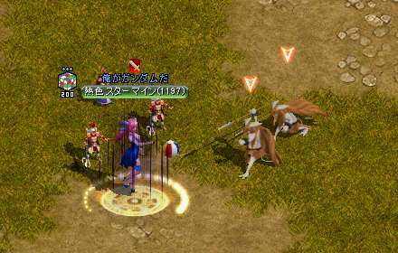

◾️受諾条件:Lv1150~
◾️経験値約1920億
◾️スキルポイント1500
◾️目安15~30分~
目次
1.ある異邦人 ＜ 2.負傷者が知っている事 ＜ 3.正体不明の実験 ＜ 4.糸口が見つからない
1. ある異邦人
ガイド/クエスト1151~【ある異邦人】へ飛ぶ ガイドからクエストある異邦人へ飛ぶ 見知らぬ人物に話しかける。 ガイドからクエストある異邦人へ飛ぶ 見知らぬ人物に話しかける。 |
|
|
精鋭戦闘要員が湧くので倒す。 |
|
 |
見知らぬ人物に話しかける。 経験値が貰えるのでパワキを準備しよう！ |
 【33.33】森の番人ケインに話しかける 【33.33】森の番人ケインに話しかける経験値が貰える！  森の番人ケイン前を記憶１ 森の番人ケイン前を記憶１ |
2. 負傷者が知っている事
|  |
森のインプを倒してクエ品を集める ドロ率ぼちぼち 一発で出た人もいる |
|---|---|
|
集めたら、テントを3触りに行く。 【28.36】【62.6】【82.8】 |
|
 |
森の番人ケインと話してＵＰ。 経験値が貰える！ |
3.正体不明の実験
|
周りのモンスターを300匹倒す。 |
|
 |
森の番人ケインと話してＵＰ。 経験値が貰える！ |
|
ガイド狩場1151〜【涼しい洞窟】を選択し飛ぶ。 赤い石を3つ触る。 【111.42】【147.57】【182.73】 |
|
|
3つ触ったら【194.10】の石を触ってＵＰ。 |
|
|
地底花を狩る 地低花の花びらを集める ドロ率はいい◎ 記憶1で番人ケインへ戻る |
|
|
森の番人ケインと話してＵＰ。 経験値が貰える！ |
4.糸口が見つからない
|
街移動で【農村ラカリフサ】へ【5.85】ユレルと話してＵＰ。 森の番人ケインと話してＵＰ。 記憶1で番人ケインへ戻る |
|
|
森の番人ケインと話してＵＰ。 経験値が貰える！スキルが貰える！ |